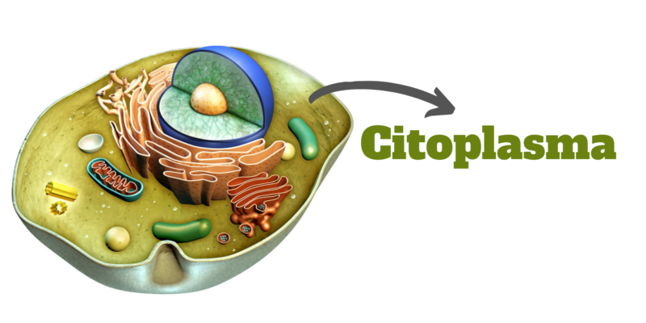

Texto

¿Qué es el citoplasma?
El citoplasma es una sustancia gelatinosa, transparente y semilíquida que se encuentra dentro de la célula, entre la membrana celular y el núcleo. En él están suspendidos los diferentes orgánulos celulares, como las mitocondrias, los ribosomas y el aparato de Golgi.
El citoplasma está compuesto principalmente por agua, sales minerales, proteínas y otras sustancias necesarias para el funcionamiento de la célula.
Funciones del citoplasma
Sostiene los orgánulos celulares, manteniéndolos en su lugar.
Permite el transporte de sustancias dentro de la célula.
Es el medio donde ocurren la mayoría de las reacciones químicas necesarias para la vida celular.
Almacena nutrientes y otras sustancias que la célula utiliza para obtener energía y crecer.
Contribuye al movimiento de algunos orgánulos dentro de la célula.
¿Qué contiene el citoplasma?
Dentro del citoplasma se encuentran diferentes orgánulos, entre ellos:
Mitocondrias: producen energía para la célula.
Ribosomas: fabrican proteínas.
Retículo endoplasmático: transporta sustancias y participa en la síntesis de proteínas y lípidos.
Aparato de Golgi: modifica, empaqueta y distribuye proteínas.
Lisosomas: degradan sustancias de desecho.
Vacuolas: almacenan agua, nutrientes y otras sustancias.
Ejemplo para comprenderlo mejor
Imagina que la célula es una fábrica:
La membrana celular sería la cerca que protege la fábrica.
El núcleo sería la oficina del director, donde se toman las decisiones.
El citoplasma sería el espacio interior de la fábrica, donde se encuentran las máquinas y donde se realizan todas las actividades necesarias para producir y mantener el funcionamiento de la fábrica.
Importancia del citoplasma
El citoplasma es fundamental porque proporciona el ambiente adecuado para que los orgánulos funcionen correctamente y para que se lleven a cabo los procesos que mantienen viva a la célula.